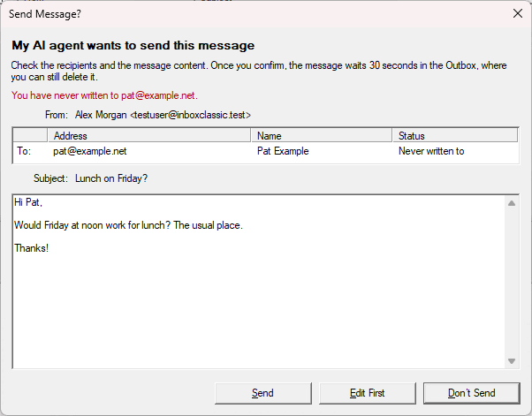
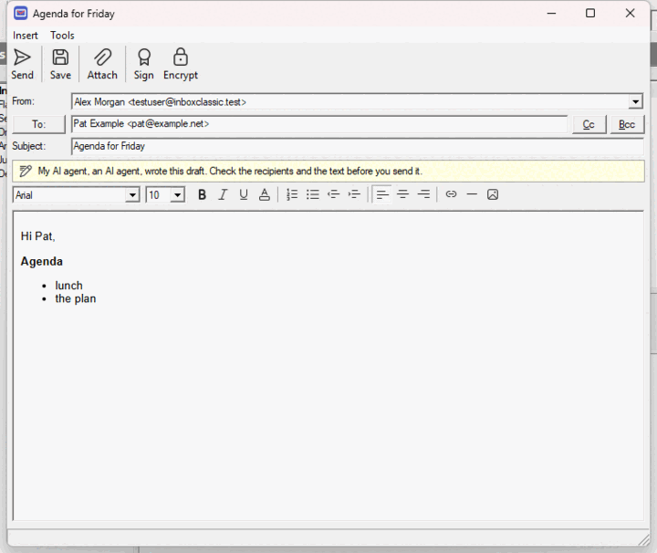

Gdy agent wysyła pocztę
Każda wiadomość agenta AI wymaga Twojego zatwierdzenia i przed wysłaniem czeka w Skrzynce nadawczej.
Agent może wysyłać pocztę tylko za Twoją zgodą. Wysłanie każdej wiadomości wymaga osobnego potwierdzenia.

Gdy agent chce wysłać wiadomość, Inbox Classic pokazuje jej treść i adresy wszystkich odbiorców. Adresy, na które nie wysłano jeszcze żadnej wiadomości, mają oznaczenie „Nowy adres”.
- Sprawdź odbiorców i przeczytaj treść wiadomości.
- Wybierz jedną z opcji:
- Przycisk „Wyślij” zatwierdza wysłanie i dodaje wiadomość do kolejki wysyłania. Staje się aktywny po krótkiej chwili, aby ograniczyć ryzyko przypadkowego kliknięcia.
- Przycisk „Najpierw edytuj” otwiera nową wiadomość w edytorze, gdzie możesz ją sprawdzić i zmienić.
- Przycisk „Nie wysyłaj” jest wyborem domyślnym. Odrzuca prośbę o wysłanie wiadomości.
Każdy program może mieć tylko jedną prośbę o wysłanie wiadomości oczekującą na Twoją odpowiedź. Jeśli nie odpowiesz od razu, agent dowie się, że prośba nadal czeka, i może później sprawdzić Twoją decyzję. Do wiadomości i wersji roboczych agenta domyślnie dodawany jest tekst podpisu ustawiony dla konta, ale agent może go pominąć. Nie jest to podpis cyfrowy.
Po zatwierdzeniu wiadomość czeka w Skrzynce nadawczej przez co najmniej 30 sekund. Dopóki tam jest, możesz ją usunąć lub użyć przycisku „Cofnij” w oknie Narzędzia > Agenci AI, aby anulować wysyłanie. Wiadomości, która została już wysłana, nie można wycofać.
Odpowiedzi na zaproszenia
Agent z uprawnieniami do wysyłania poczty może w Twoim imieniu przyjąć, wstępnie przyjąć lub odrzucić zaproszenie do kalendarza. Wymaga to zatwierdzenia w tym samym oknie. Nad treścią wiadomości podano, którego zaproszenia dotyczy odpowiedź i kiedy odbywa się wydarzenie. Inbox Classic tworzy odpowiedź do organizatora na podstawie samego zaproszenia, więc nie można najpierw otworzyć wiadomości, aby ją zmienić. Status zaproszenia w Inbox Classic zmieni się dopiero po wysłaniu wiadomości. Nie potwierdza to jej przetworzenia przez kalendarz organizatora. Do odpowiedzi na zaproszenia nie jest dodawany tekst podpisu konta.
Wersje robocze pisane przez agenta
Po otwarciu wersji roboczej agenta nad jej treścią pojawia się informacja z nazwą jego programu. Przed wysłaniem sprawdź odbiorców i treść.

Agent może zmieniać lub trwale usuwać tylko własne wersje robocze, których jeszcze nie zapisano w edytorze. Po zapisaniu wersji roboczej w edytorze agent traci te uprawnienia. Dotyczy to również zapisu automatycznego. Samo otwarcie wersji roboczej nie odbiera agentowi dostępu.